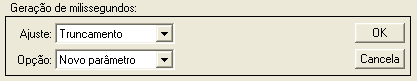
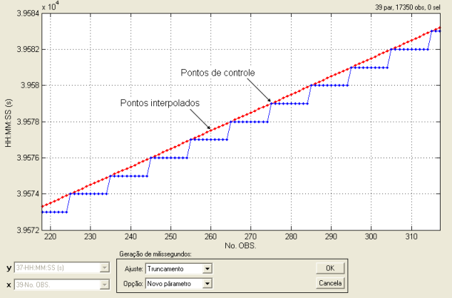
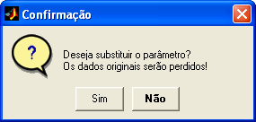

| Menu Funções |
|
Gerar
Milissegundos
Essa função
permite gerar os milissegundos caso o de
parâmetro de tempo apresente apenas valores inteiros de segundos. É uma
função
útil no caso de composição de parâmetros de tempo sem milissegundos
(apenas
horas, minutos e segundos inteiros).
Clique no menu “Funções ►
Filtragem e reamostragem
... ► Gerar
milissegundos”.
A Caixa de
Diálogo solicitará que o usuário indique a opção:

● No campo
“Ajuste”, indique como o R_DAT deve interpretar a ausência dos milissegundos. As opções são:
|
Opção |
Descrição |
|
Truncamento |
Assume-se que o parâmetro original foi gerado por truncamento dos segundos. Os milissegundos são gerados interpolando-se duas mudanças de patamar sucessivas. |
|
Arredondamento |
Assume-se que o parâmetro original foi gerado por arredondamento dos segundos. Os milissegundos são gerados interpolando-se duas mudanças de patamar sucessivas e subtraindo-se 0,5 segundo. |
| Nota: Caso as mudanças de patamar não tenham ocorrido em segundos inteiros, haverá um erro desconhecido na geração dos milissegundos. |
● No campo
“Opção”, indique se deseja criar um novo
parâmetro ou substituir o atual com os dados modificados.
Os pontos do parâmetro de tempo que apresentam uma alteração do valor são usados como pontos de controle. Os pontos repetidos serão interpolados linearmente de forma a formarem um parâmetro crescente, sobre o qual pode ou não ser aplicado um ajuste de -0,5 segundo.
O resultado da interpolação será mostrado temporariamente:

Ao clicar “OK”,
o usuário deverá fornecer o nome do novo
parâmetro ou confirmar a substituição do parâmetro original, dependendo
da
seleção do campo “Opção”.


No primeiro
caso, após definir o nome e pressionar “OK”, o
novo parâmetro com os pontos interpolados será acrescentado à penúltima
posição
das matrizes de trabalho (antes de “No.OBS.”).
No segundo
caso, ao clicar “Sim” o parâmetro será
atualizado.
| |
Interpolar
pontos inválidos |
Reordenar
dados |
|